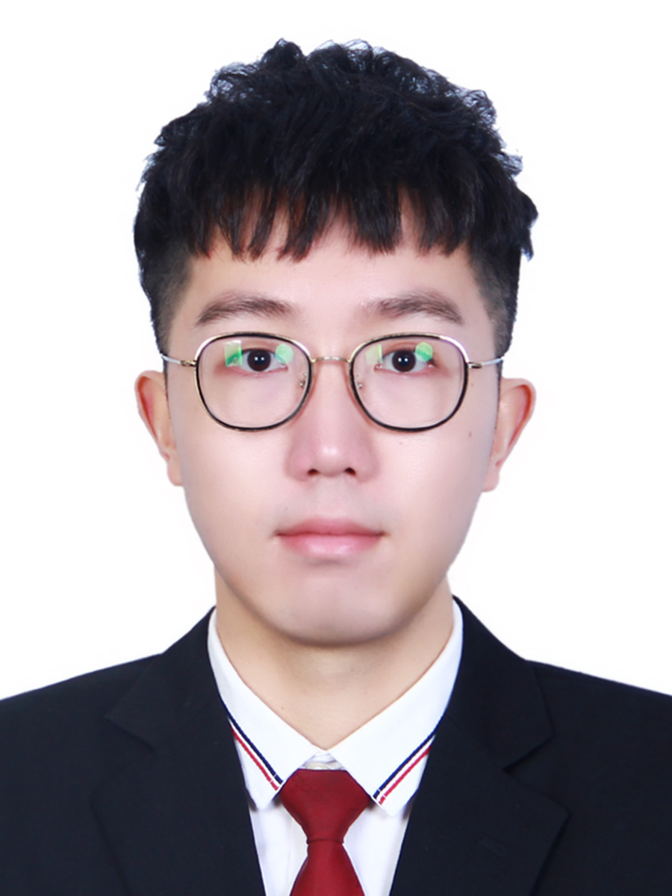
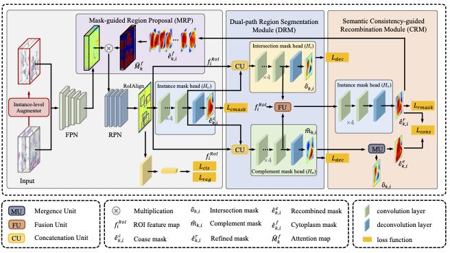
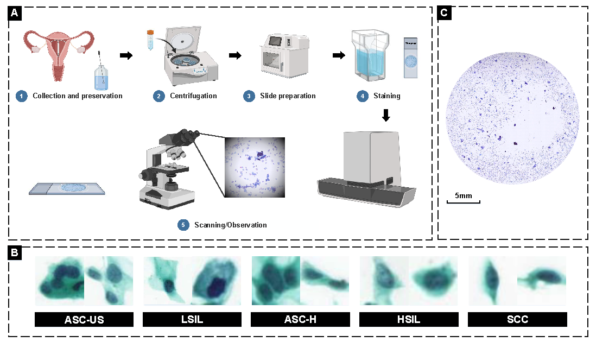
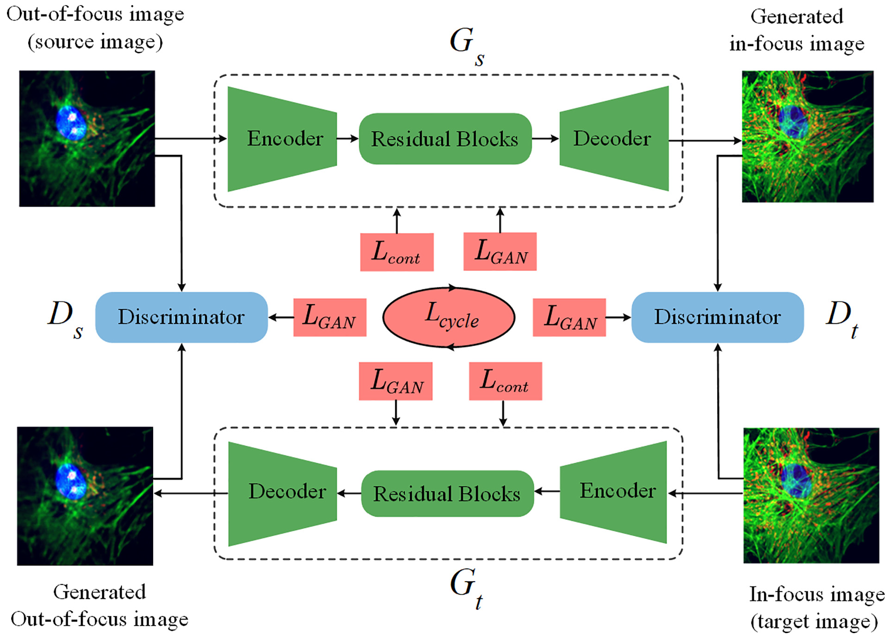
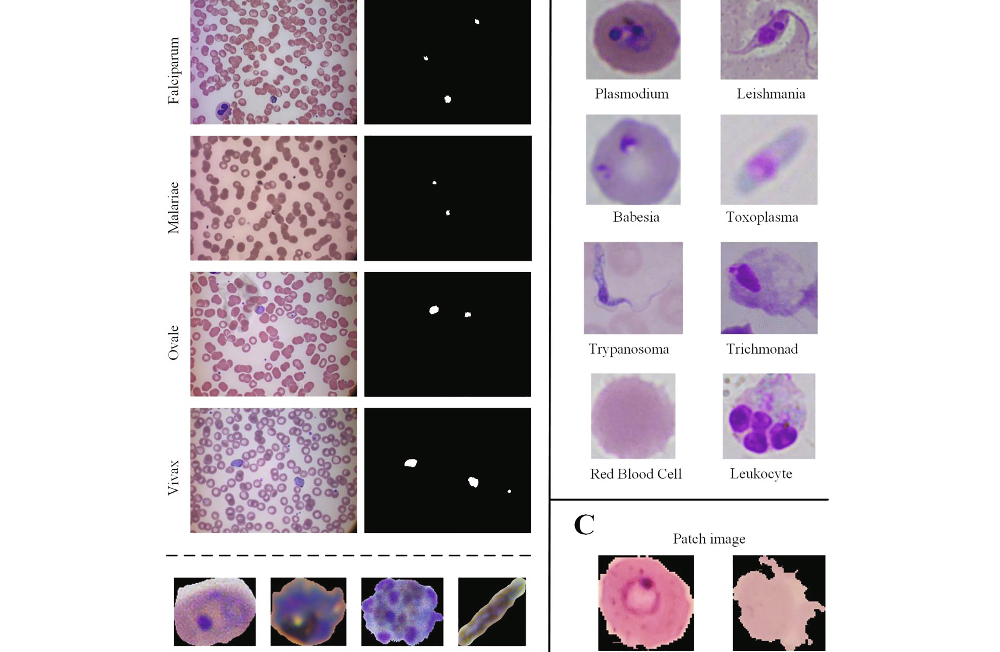
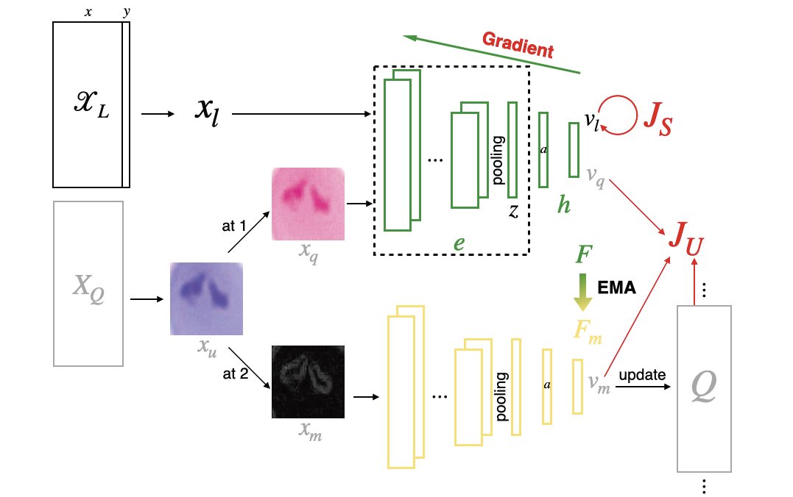
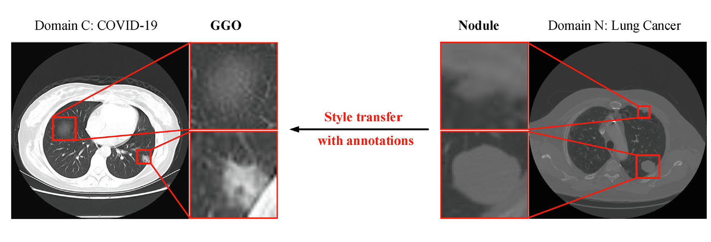
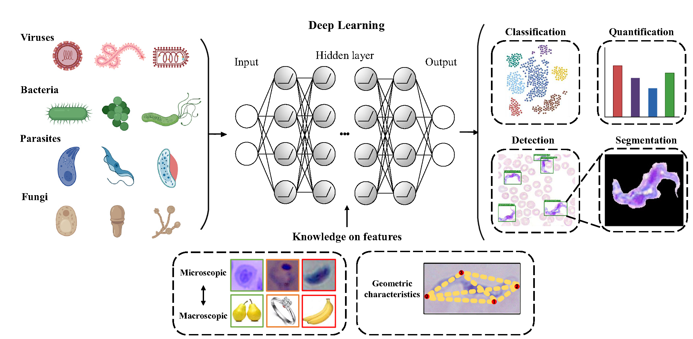
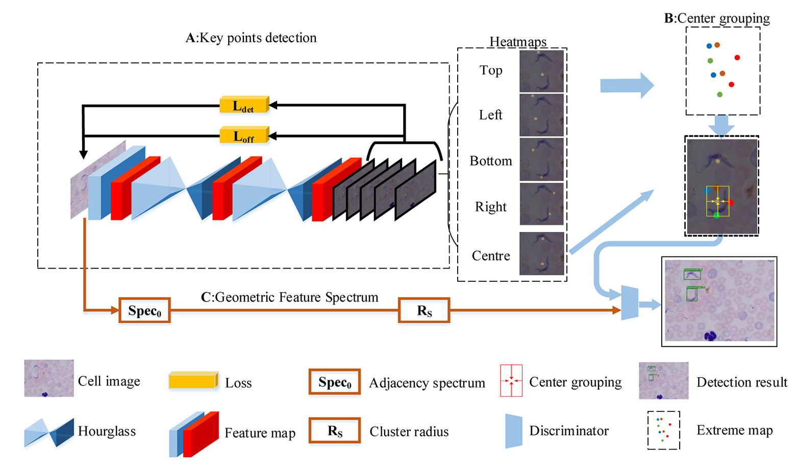
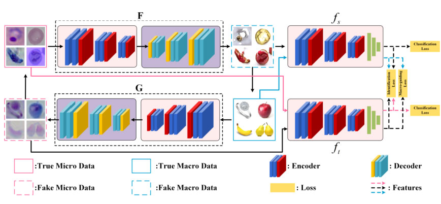

|
Hao Jiang Ph.D. Student
Department of Computer Science and Engineering |
 |


Biography
I amd currently 1st-year PhD student at the Department of Computer Science and Engineering, The Hong Kong University of Science and Technology, Hong Kong, a member of Smart Lab supervised by Prof. Hao Chen. Previously, I received my M.S. degree (2022) from Waseda University, Japan, a member of Furuzuki Lab led by Prof. Takayuki FURUZUKI. In the same year, I obtained my dual M.S. degree (2022) from University of Electronic Science and Technology of China, Chengdu, a member of MediaLab Lab. Before that, I recieved my B.S. degree (2019) in information countermeasures. I also have been a research assistant at the School of Science, Harbin Institute of Technology, Shenzhen , under the supervision of Prof. Yang Zhang in 2019-2020.
My research interests include medical image analysis and deep learning, mainly focusing on 1) Computational Pathology and Cytology, 2) Truthworthy AI considering Transferability, Generalizability and Explainability.
News
- [03/2023] One paper was accepted by CVPR 2023.
- [11/2022] One paper was accepted by Medical Image Analysis.
- [06/2022] I passed my oral defense in UESTC and recieved the second M.S. degree.
- [04/2022] I passed my oral defense in Waseda University and become a M.S..
- [03/2022] Two co-authored paper were accepted by CSBJ.
- [11/2021] One co-authored paper was accepted by IEEJ Trans. on Electrical and Electronic Engineering.
- [10/2021] One co-authored paper was accepted by IEEE SMC 2021.
- [07/2021] One co-authored was accepted by Trends in Microbiology.
- [03/2021] One paper was accepted by CSBJ.
- [08/2020] One co-authored was accepted by Bioinformatics.
- [02/2020] One paper was accepted by mSystems.
-
The Hong Kong University of Science and Technolog, Hong Kong, 2021 - 2022
Research Assistant
Advisor: Prof. Hao Chen
Topics: Computational Cytology, Cell Instance Segmentation
-
Harbin Institute of Technology, Shenzhen, 2019 - 2020
Research Assistant
Advisor: Prof. Yang Zhang
Topics: Deep Learning for Microbiology
-
Method and system for microscopy object detection via deep geometry feature spectrum.
Yang Zhang, Hao Jiang.
China Patent CN110738254A, 2019.
-
A comprehensive analysis system of breast cancer pathological image based on key point detection.
Hao Jiang.
China Patent CN111968147A, 2020.
-
Regular Reviewers:
IEEE Journal of Biomedical and Health Informatics (JBHI)
IEEE Transactions on Neural Networks and Learning Systems (TNNLS)
-
Membership:
Institute of Electrical and Electronics Engineers (IEEE)
The Hong Kong Young Scientists Association (HKYSA)
Medical Imaging Computing Seminar (MICS)
Experience
Selected Publications from Full List
|  | DoNet: Deep De-overlapping Network for Cytology Instance Segmentation. Hao Jiang, Rushan Zhang, Yanning Zhou, Yumeng Wang, Hao Chen. IEEE Conference on Computer Vision and Pattern Recognition (CVPR), 2023. |
|  | Deep Learning for Computational Cytology: A Survey. Hao Jiang, Yanning Zhou, Yi Lin, Ronald CK Chan, Jiang Liu, Hao Chen. Medical Image Analysis (MedIA), 2022. IF:13.828 [paper][PPT] |
|  | Correction of out-of-focus microscopic images by deep learning. Chi Zhang, Hao Jiang, Hanlin Jiang, Hui Xi, Baodong Chen, Yubing Liu, Mario Juhas, Junyi Li, Yang Zhang. Computational and Structural Biotechnology Journal (CSBJ), 2022. IF:6.155 [paper] |
|  | Deep learning for microscopic examination of protozoan parasites. Chi Zhang, Hao Jiang, Weihuang Liu, Junyi Li, Shiming Tang, Mario Juhas, Yang Zhang. Computational and Structural Biotechnology Journal (CSBJ), 2022. IF:6.155 [paper] |
|  | A Semi-Supervised Classification Method of Apicomplexan Parasites and Host Cell using Contrastive Learning Strategy. Yanni Ren, Hangyu Deng, Hao Jiang, Jinglu Hu. IEEE International Conference on Systems, Man, and Cybernetics (SMC), 2021. [paper] |
|  | Deep Learning for COVID-19 Chest CT (computed tomography) Image Analysis: A Lesson from Lung Cancer. Hao Jiang, Shiming Tang, Weihuang Liu, Yang Zhang. Computational and Structural Biotechnology Journal (CSBJ), 2021. IF:7.271 [paper] |
|  | Deep Learning for Imaging and Detection of Microorganisms. Yang Zhang, Hao Jiang, Taoyu Ye, Mario Juhas. Trends in Microbiology, 2021. IF:18.230 [paper] |
|  | Geometry-Aware Cell Detection with Deep Learning. Hao Jiang, Sen Li, Weihuang Liu, Hongjin Zheng, Jinghao Liu, Yang Zhang. mSystems, 2020. IF:7.324 [paper] |
|  | Parasitologist-level Classification of Apicomplexan Parasites and Host Cell with Deep Cycle Transfer Learning. Sen Li, Qi Yang, Hao Jiang, Jesús A Cortés-Vecino, Yang Zhang. mSystems (Bioinformatics), 2020. IF:6.937 [paper] |
Patent
Services
Teaching
| 2023-2024Fall | Teaching Assistant | COMP 4331 - Data Mining | (Instructor: Dr Ki Cecia CHAN) | |||||
| 2022-2023Spring | Teaching Assistant | COMP 4451 - Game Programming | (Instructor: Prof Pedro SANDER) | |||||
| 2019-2020Spring | Teaching Assistant | Blockchain Technology and Application |